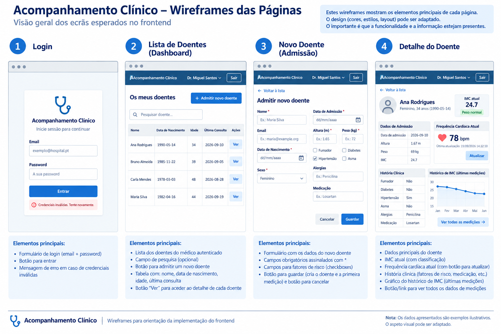

1. Contexto
Uma unidade de saúde pretende disponibilizar aos profissionais uma aplicação Web simples para acompanhamento dos seus doentes.
O profissional deverá autenticar-se no sistema. Após autenticação, terá acesso aos doentes que acompanha e poderá realizar a admissão de um novo doente, registando os seus dados de identificação, informação básica de admissão e um conjunto reduzido de elementos da história clínica.
A partir da lista de doentes, o profissional poderá selecionar um doente e aceder à respetiva área clínica individual. Esta área funcionará como um pequeno dashboard, combinando informação relativamente estável — dados de identificação e história clínica — com informação que evolui ao longo do tempo.
No dashboard deverá ser possível visualizar a evolução do índice de massa corporal (IMC) e acompanhar a frequência cardíaca do doente, obtida periodicamente a partir do backend.
O objetivo não é desenvolver um sistema clínico completo, mas utilizar este cenário para explorar os principais mecanismos envolvidos no desenvolvimento de um frontend Web e na sua comunicação com um backend.

2. Tecnologias e regras
- HTML5, privilegiando elementos semânticos;
- JavaScript nativo (vanilla JavaScript);
- DOM API e eventos;
- Fetch API para comunicação HTTP/REST;
- Web Storage API, quando necessário;
- Developer Tools do browser.
Não devem ser utilizados frameworks frontend como React, Vue ou Angular. Poderá ser autorizada uma biblioteca exclusivamente para a representação gráfica da evolução do IMC.
- MDN — HTML elements reference
- W3C — Markup Validation Service (validar o HTML produzido)
3. Percurso funcional
Autenticação → Lista de doentes → Admissão de novo doente ou seleção de doente existente → Dashboard individual do doente
4. Documentação da API disponibilizada
O backend é fornecido. Para desenvolver o frontend, deverão utilizar a API através dos endpoints abaixo. Considerem esta documentação como o contrato entre frontend e backend: não é necessário conhecer a implementação interna do servidor para consumir a API.
A URL base utilizada nos exemplos é http://localhost:3000/api. Exceto no login e no health check, os pedidos são protegidos e devem incluir Authorization: Bearer <token>.
| Método | Endpoint | Finalidade | JWT |
|---|---|---|---|
GET | /health | Verificar se a API está disponível | Não |
POST | /auth/login | Autenticar e obter o JWT | Não |
GET | /doctors/:id/patients | Listar os doentes associados ao médico | Sim |
POST | /doctors/:id/patients | Admitir um novo doente | Sim |
GET | /patients/:id | Consultar os dados de um doente | Sim |
GET | /patients/:id/measurements | Obter o histórico de peso, altura e IMC | Sim |
GET | /patients/:id/vitals/latest | Obter a frequência cardíaca simulada atual | Sim |
Detalhe dos endpoints
POST/auth/login — Autenticação
Body: application/json
{
"email": "miguel.doctor@example.org",
"password": "demo123"
}Resposta de sucesso: contém o JWT e a informação do utilizador autenticado. O id devolvido deverá ser utilizado pelo frontend em vez de assumir um ID fixo.
{
"token": "...",
"user": {
"id": 10,
"name": "Dr. Miguel Ferreira",
"email": "miguel.doctor@example.org",
"role": "DOCTOR"
}
}Credenciais de demonstração: miguel.doctor@example.org / demo123.
GET/doctors/:id/patients — Lista de doentes
Substituam :id pelo ID do médico autenticado. A resposta é um array com os doentes associados a esse médico.
[
{
"id": 1,
"name": "Ana Martins",
"email": "ana.patient@example.org"
}
]POST/doctors/:id/patients — Admitir novo doente
Body: application/json
{
"name": "Maria Silva",
"email": "maria.silva@example.org",
"birthDate": "1982-04-16",
"sex": "F",
"admissionDate": "2026-09-19",
"height": 1.65,
"weight": 72,
"smoker": false,
"diabetes": false,
"hypertension": true,
"asthma": false,
"allergies": "Penicilina",
"medication": "Losartan"
}Em caso de sucesso, o backend cria o utilizador/doente, associa-o ao médico e regista a primeira medição. Guardem o id devolvido para poder consultar o novo doente.
GET/patients/:id — Dados do doente
Devolve os dados necessários para preencher a área clínica individual, incluindo identificação, admissão, dados clínicos e medição atual.
{
"id": 1,
"name": "Ana Martins",
"email": "ana.patient@example.org",
"birthDate": "...",
"sex": "F",
"admissionDate": "...",
"height": 1.67,
"weight": 68,
"bmi": 24.4,
"clinicalHistory": {
"smoker": false,
"diabetes": false,
"hypertension": true,
"asthma": false,
"allergies": "...",
"medication": "..."
}
}Os valores apresentados são ilustrativos do formato da resposta; consultem a API para obter os dados efetivos.
GET/patients/:id/measurements — Histórico de medições
Devolve uma série cronológica que poderá ser utilizada para construir o gráfico de evolução do IMC.
[
{
"date": "2026-01-10",
"weight": 72,
"height": 1.67,
"bmi": 25.8
},
{
"date": "2026-05-10",
"weight": 69,
"height": 1.67,
"bmi": 24.7
}
]GET/patients/:id/vitals/latest — Frequência cardíaca
Devolve uma leitura simulada de frequência cardíaca. O valor é gerado no momento do pedido e não é armazenado na base de dados.
{
"patientId": 1,
"heartRate": 76,
"timestamp": "2026-09-19T13:30:00.000Z"
}Executem o pedido várias vezes e observem a alteração de heartRate e timestamp. No frontend, este endpoint será utilizado para implementar polling.
Códigos HTTP a considerar
| Status | Significado neste trabalho |
|---|---|
200 OK | Pedido realizado com sucesso. |
201 Created | Novo recurso criado com sucesso. |
400 Bad Request | Dados enviados inválidos ou incompletos. |
401 Unauthorized | Autenticação em falta ou token inválido. |
403 Forbidden | Utilizador autenticado, mas sem autorização para o recurso. |
404 Not Found | Recurso ou endpoint não encontrado. |
Antes de implementar cada pedido com fetch(), testem o endpoint através dos ficheiros .http fornecidos. No Visual Studio Code podem utilizar a extensão REST Client e executar cada pedido através de Send Request.
6. Autenticação
A aplicação deverá iniciar com um formulário de autenticação. A submissão deverá ser tratada em JavaScript e originar um pedido ao endpoint de login através de fetch().
Após autenticação bem-sucedida, o frontend deverá guardar temporariamente o JWT e a informação necessária sobre o utilizador autenticado. Para este exercício poderá ser utilizado sessionStorage. Nos endpoints protegidos, o token deverá ser enviado no cabeçalho Authorization: Bearer <token>.
sessionStorage?
No login, o frontend envia as credenciais necessárias ao endpoint, normalmente num corpo JSON. O backend devolve uma resposta JSON que inclui o resultado da autenticação e, neste exercício, um JWT e informação sobre o utilizador.
O token encontra-se na resposta ao login e deverá depois ser enviado nos pedidos protegidos através do cabeçalho Authorization. Uma variável JavaScript existe apenas enquanto a página/contexto que a criou se mantiver carregado. O sessionStorage permite manter valores entre páginas do mesmo separador e é eliminado quando a sessão desse separador termina.
6. Área do médico — lista de doentes
Após o login, o profissional deverá visualizar os doentes que lhe estão associados. A lista deverá ser obtida através da API e construída dinamicamente através da DOM API.
Não deverá ser assumido um identificador fixo para o médico. Utilizem a informação do utilizador autenticado devolvida pelo backend. Cada doente deverá permitir navegar para a respetiva área clínica individual e deverá existir uma opção para admitir um novo doente.
7. Admissão de um novo doente
Criem uma página ou área com um formulário para registar um novo doente.
7.1 Informação a recolher
- Identificação: nome, data de nascimento, sexo e email;
- Admissão: data de admissão, altura e peso;
- História clínica simplificada: fumador, diabetes, hipertensão e asma;
- Alergias e medicação habitual.
Utilizem controlos HTML adequados ao tipo de informação e organizem os campos recorrendo, quando adequado, a form, fieldset, legend e label.
7.2 Validação e envio
Utilizem atributos como required, min e max. A submissão deverá ser tratada através do evento submit. O JavaScript deverá ler os valores, construir um objeto, convertê-lo para JSON e enviá-lo ao backend através de um pedido POST.
- GET: é utilizado aqui para consultar recursos; normalmente não envia um
body. - POST: é utilizado aqui para criar um novo recurso e envia os dados no
body, neste caso em JSON. - No POST é necessário indicar
Content-Type: application/json. Em endpoints protegidos, tanto GET como POST podem necessitar do cabeçalhoAuthorization. - A resposta de um GET contém tipicamente os dados pedidos; a resposta ao POST pode devolver o recurso criado e um código de sucesso apropriado.
8. Dashboard individual do doente
A página de detalhe deverá funcionar como um pequeno dashboard clínico. O identificador do doente poderá ser recebido através da query string e lido com URLSearchParams.
- identificação e informação básica;
- dados de admissão;
- resumo da história clínica;
- peso/altura/IMC atual;
- gráfico da evolução do IMC;
- card de frequência cardíaca.
9. Evolução do IMC
Obtenham do backend os registos necessários para representar a evolução do IMC ao longo do tempo. Os dados deverão ser tratados em JavaScript e representados num gráfico de linhas.
- MDN — Array.map()
- Chart.js — Documentation (caso esta biblioteca seja autorizada)
O IMC atual representa apenas o estado num determinado momento. Uma série temporal associa vários valores às respetivas datas, permitindo observar a evolução do indicador, incluindo aumentos, diminuições ou períodos de estabilidade.
10. Frequência cardíaca — atualização dinâmica por polling
O dashboard deverá conter um card com a frequência cardíaca atual e a hora da última atualização. Como requisito base, o frontend deverá consultar periodicamente o backend através de fetch() e utilizar setInterval() para implementar polling, sem recarregar a página.
Observem no separador Network os pedidos sucessivos. Registem o intervalo escolhido e analisem o efeito de um intervalo excessivamente curto ou de muitos utilizadores em simultâneo.
No polling é sempre o cliente que inicia a comunicação: de tempos a tempos pergunta ao servidor se existem novos dados. O servidor apenas responde ao pedido recebido.
Se o valor não tiver mudado, o pedido HTTP e a respetiva resposta continuam a ocorrer. Assim, podem existir comunicações desnecessárias. Intervalos muito curtos e muitos clientes aumentam o número de pedidos e a carga sobre o servidor e a rede.
11. Desafio extra — WebSocket
Como desafio adicional, substituam o polling da frequência cardíaca por uma ligação WebSocket, permitindo que o backend envie novos valores através de uma ligação persistente.
Operações pontuais como autenticação, obtenção da lista de doentes, consulta do detalhe, criação de um doente e obtenção do histórico de IMC encaixam naturalmente em pedidos HTTP/REST. A monitorização frequente da frequência cardíaca pode beneficiar de WebSocket, porque a ligação persistente permite ao servidor enviar novos valores quando estes estão disponíveis.
12. DOM, eventos e segurança
Privilegiem document.createElement(), textContent, appendChild() e outras operações explícitas sobre o DOM, em vez de inserir indiscriminadamente strings através de innerHTML.
innerHTML? Relacionem a resposta com XSS.
Se dados não confiáveis forem interpretados como HTML, podem introduzir elementos ou código malicioso na página. Isto pode criar uma vulnerabilidade de Cross-Site Scripting (XSS). Ao usar textContent para texto, o browser trata o valor como conteúdo textual em vez de o interpretar como HTML.
13. Tratamento de erros HTTP
Verifiquem response.ok e apresentem mensagens adequadas ao utilizador.
- 401 — recurso protegido sem autenticação/token válido;
- 403 — utilizador autenticado sem autorização;
- 404 — recurso ou endpoint inexistente;
- 400 ou erro de validação — dados enviados não aceites pelo backend, quando aplicável.
14. Exploração com Developer Tools
Analisem no Network pelo menos um login, um GET, o POST de criação de um doente e os pedidos periódicos de frequência cardíaca. Identifiquem URL, método, status, headers, payload quando aplicável e resposta. Localizem também o JWT.
15. Organização do JavaScript
Identifiquem no código responsabilidades distintas: manipulação da interface/DOM, tratamento de eventos, lógica da aplicação, comunicação com a API e gestão de estado/sessão. Não é necessário implementar uma arquitetura complexa.
16. Entregável
frontend/index.html— autenticação;frontend/patients.html— lista de doentes;frontend/new-patient.html— formulário de admissão;frontend/patient.html— dashboard individual;- ficheiros JavaScript correspondentes;
frontend/README.md— instruções e respostas breves às questões.
17. Critérios de sucesso
- Autenticação funcional e utilização correta do JWT;
- HTML semanticamente adequado;
- Lista de doentes obtida através da API;
- Criação de doente através de formulário e POST JSON;
- Validação e feedback;
- Dashboard individual;
- gráfico de evolução do IMC;
- frequência cardíaca atualizada por polling;
- tratamento de erros HTTP;
- utilização das Developer Tools;
- JavaScript compreensível e organizado;
- Extra: WebSocket.
18. Conceitos trabalhados
HTML semântico · formulários · validação HTML · DOM · eventos · JavaScript assíncrono · Fetch API · HTTP · REST · GET e POST · JSON · autenticação · autorização · JWT · sessionStorage · query strings · arrays e séries temporais · visualização de dados · polling · Developer Tools · tratamento de erros · segurança/XSS · WebSocket (extra) · separação de responsabilidades.